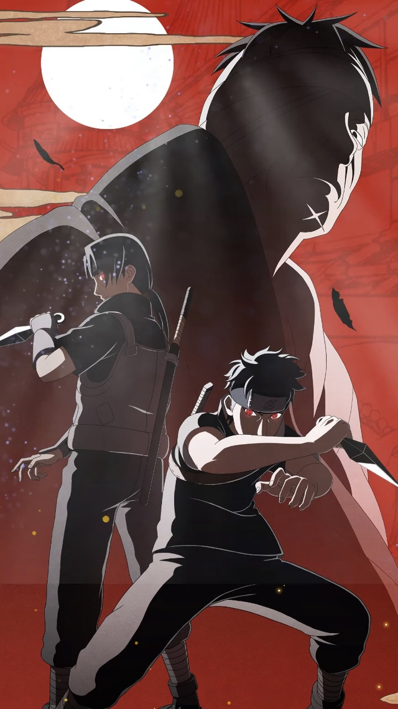

宇智波止水，木叶隐村宇智波一族天才忍者，被誉为瞬身止水，拥有最强幻术别天神，是宇智波一族顶尖强者。
一、年少成名（天赋绝伦）
出身宇智波名门，自幼天赋远超同族同辈，年少便展露惊人实力。
性格温和正直，心怀村子大局，不偏袒族群私怨，深受族人与高层信任。
年纪轻轻便跻身木叶顶尖上忍行列，实力与声望双高。
二、瞬身之名（神速无敌）
精通独门忍术瞬身之术，行动快到肉眼难以捕捉，战场来去自如。
凭借超快身法驰骋战场，对战中占据绝对先机，被世人称作瞬身止水。
战斗风格冷静沉稳，擅长预判战局，攻防兼备极少落败。
三、最强幻术（别天神）
拥有宇智波一族至宝万花筒写轮眼，独拥幻术别天神。
别天神被誉为最强幻术，可在无人察觉之下悄然改变他人意志，无声操控人心。
此术威力极强却消耗巨大，冷却时间漫长，一生难以轻易动用。
止水将蕴含别天神的右眼托付给挚友宇智波鼬，用以守护木叶安宁。
四、族群内乱（夹缝求生）
木叶高层忌惮宇智波一族势力，族群内部也萌生谋反夺权之心。
止水一心调和矛盾，希望以和平方式化解族群与村子的冲突，避免流血内战。
他不愿同族自相残杀，更不愿木叶陷入动乱，始终奔走调停。
五、遭人暗算（含冤隐退）
团藏觊觎止水强大的写轮眼，暗中设计设下圈套。
趁其不备暗中偷袭，强行夺走止水左眼，使其实力大损。
止水深知自己无力再扭转局势，也不愿沦为他人争斗的棋子。
为保全最后的尊严，同时避免写轮眼落入恶人之手，选择纵身跳崖，假意身死隐退世间。
六、身后遗志（薪火相传）
止水离世后，他守护和平、顾全大局的信念被宇智波鼬继承。
鼬始终牢记止水心愿，以一己之力平息宇智波叛乱，守住木叶安稳。
忍界大战后期，止水曾以灵魂形态短暂现身，助力忍者联军扭转战局。
一生心怀大义，舍弃私欲与族群恩怨，是忍界当之无愧的仁义强者。
七、人物信条
“真正的和平，从来都不需要流血与争斗。”